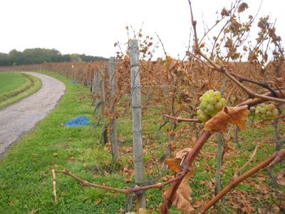

Paris Shahrzad the back-packer on a bridge over the Seine near the Eifel Tower.

Luxembourg Our friends in Luxembourg are Guity and Mohit Amirnia. Mohit is a good skier and we first met in AMUT during a ski trip in 1970s. Ever since he emigrated to Europe and is now well settled in Luxembourg, doing construction projects through his own company.
Small town of Lenningen (no relations to Vladimir Lenin) near the city of Luxembourg.

The Neatherlands In Leiden with Saeed Jalazadeh, our longtime friend from the AMUT and US days.
Lang zal ze leven, (Let her live long,)
Lang zal ze leven, (Let her live long,)
Lang zal ze leven in de gloria (Let her live long, in glory,)
In de glo-ri-a, in de glo-ri-a (in glory, in glory)
Hiep-hiep-hiep hoera! (hip-hip hurrah!)
Hiep-hiep-hiep hoera! (hip-hip hurrah!)
I prepared a dish of Naz Khatoon stew for the occasion.
Copenhagen On our way to Sweden we stopped in Copenhagen for few hours. We walked the waterfront, saw the new opera house, and had lunch near some traditional sail ships in the harbor. Here Shahrzad is fulfilling her duty as a tourist of the city with the Little Mermaid.
Stockholm Stochholm skyline as seen from the Katarinahissen or Katarina elevator. We intended to go to Stockholm for many years as my friend Shiva Farahmand Rad had invited us on so many occasions. Finally we made it. We traveled from Amsterdam to Malmo, and then we took a night train to Stockholm. The city has its peculiar architecture. One aspect of Stockholm is that it is built on a very rocky terrain. No wonder Alfred Nobel invented dynamite. They need it, instead of picks and showels to level the ground and build houses.
Berlin A quick passage to Berlin. We rushed to the Brandenburg gate, a symbol of the once divided Berlin. They were preparing the place for the celebrations of the 20th anniversary of the fall of the Berlin wall. So we couldn't walk through the gate. Weather was very cold and I used a ski hat Shahrzad gave me which made me look like a member of the Soviet Army.

Prague Beautiful and historic city of Prague was the highlight of our trip. The city stretches beautifully along the Vltava river and with many medieval buildings, cobbled streets, parks and arts all over the city, has a unique charm of its own.
Dresden Small city of Dresden. We decided to visit this city partly to pay respect to those who lost their lives in one of the dark moments of World War II.
Leipzig I wanted to visit Leipzig only because in this city J.S. Bach lived and worked for so many years.
The organist that evening was Ulrich Böhme, who in a sense is Bach's successor. He played pieces by Messian, Dupre and Mendelssohn, but the height of the evening for me was when he started Bach's 'Dorian' Toccata (BWV 538). Watch and listen this work as performed by Aarnoud de Groen on Youtube.
Munich We boarded a nice Inter City Express train to Munich. I am no stranger in Munich. I used to go to this beautiful and lively Bavarian, and International, city when I was working with a partner company of Siemens in Tehran in 1990s. This time we were on an invitation by two young student friends of ours.
Salzburg A day's trip to Salzburg. We had a good time on train to Salzburg and dined in this restaurant in a back alley of the city.
Bolzano We crossed the scenic Alps into Italy. This was my first time in this country.
Florence Florence is the city of Machiavelli and Michaelangello. And Dante. And Leonardo da Vinci. And Galileo. And...you get the idea: it is a very important historic and cultural city. Like other 1.6 million tourists who come to this city every year, we came here to...well, to have food from Tuscany.